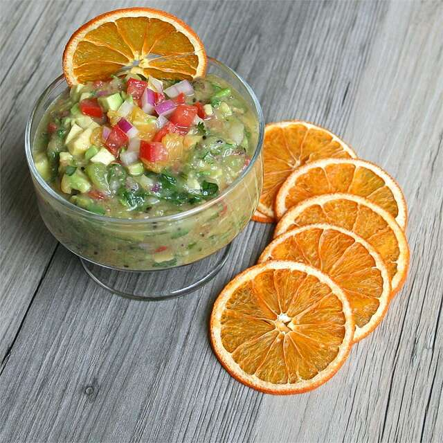

Fruit Salsa

Description
Like a cool breeze on a hot summer day at the beach, this flavorful fruit salsa is zesty and refreshing! Serve it with tortilla chips.
Total: 15 mins - Prep: 15 mins - Servings:32 - Yiels: 4 cups
Ingredients
- 1 tomato
- 1 orange, peeled and segmented
- 2 kiwis, peeled and sliced
- 1 red onion, coarsely chopped
- 1 avocado, peeled and pitted
- 1 bunch cilantro
- 2 jalapeno chile peppers
- garlic salt to taste
Nutrition Facts
Per Serving: 18 calories; protein 0.3g; carbohydrates 2.4g; fat 1g; sodium 1.7mg.
Directions
- In a food processor, place tomato, orange, kiwis, red onion, avocado, cilantro and jalapeno chile peppers. Process using pulse setting until finely chopped but not quite smooth. Transfer to a medium bowl, and garnish with desired amount of garlic salt.
return